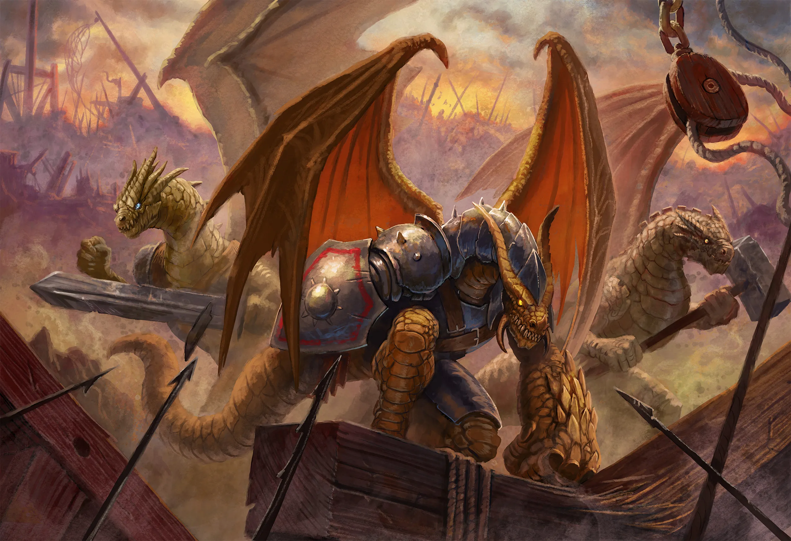
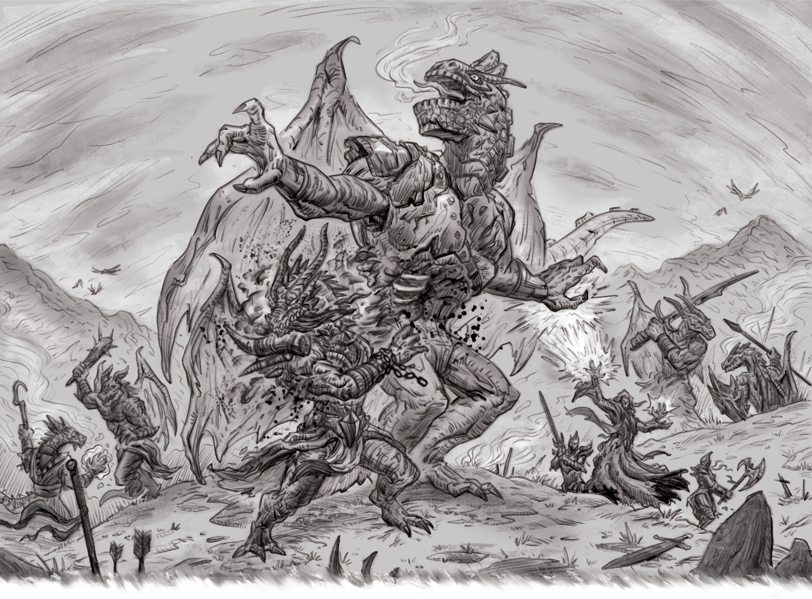
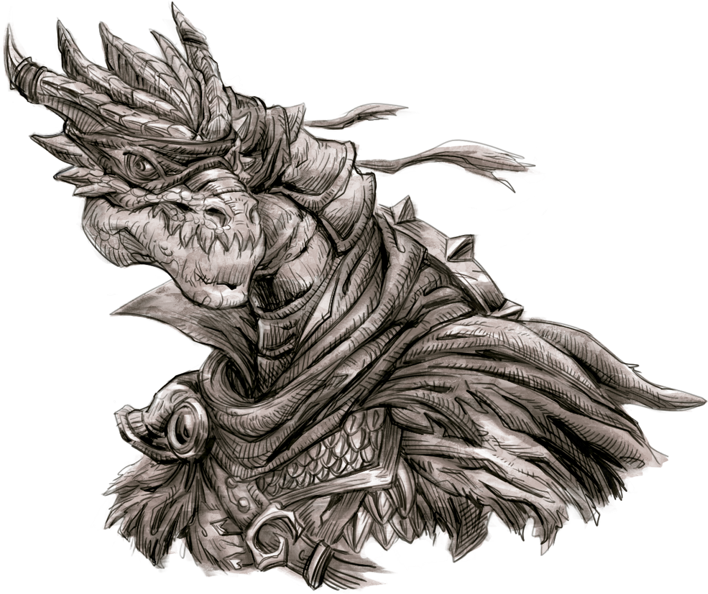
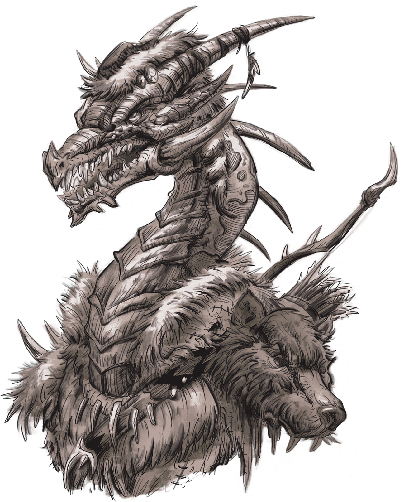
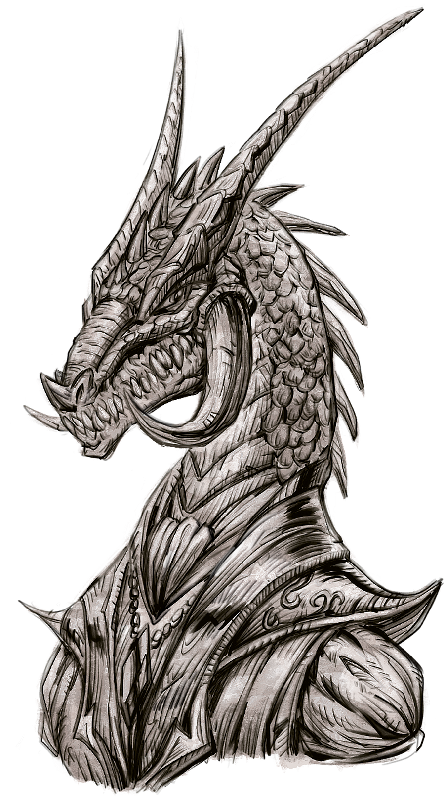
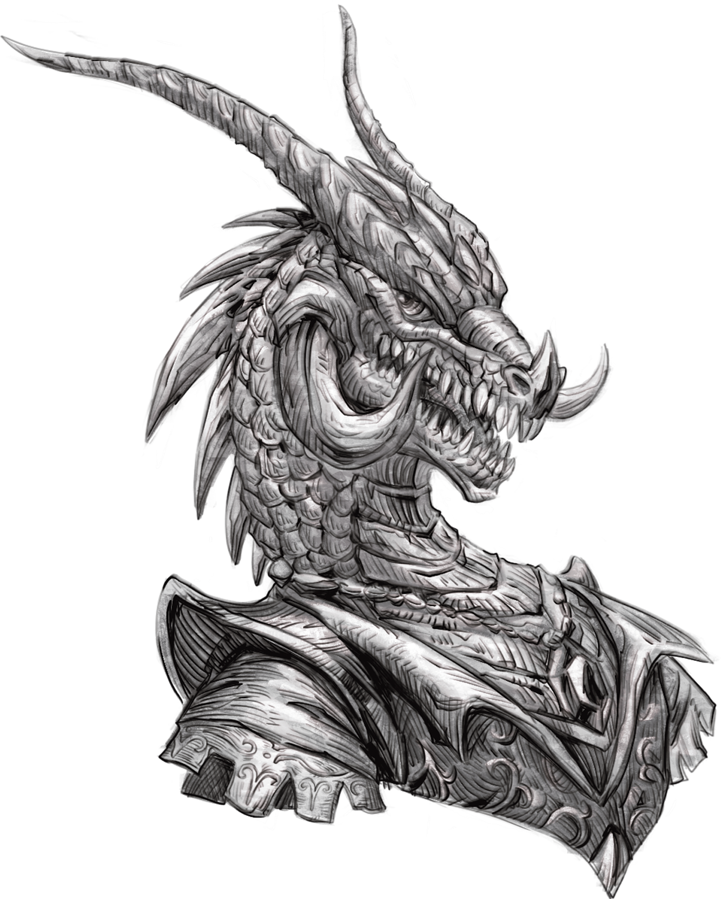
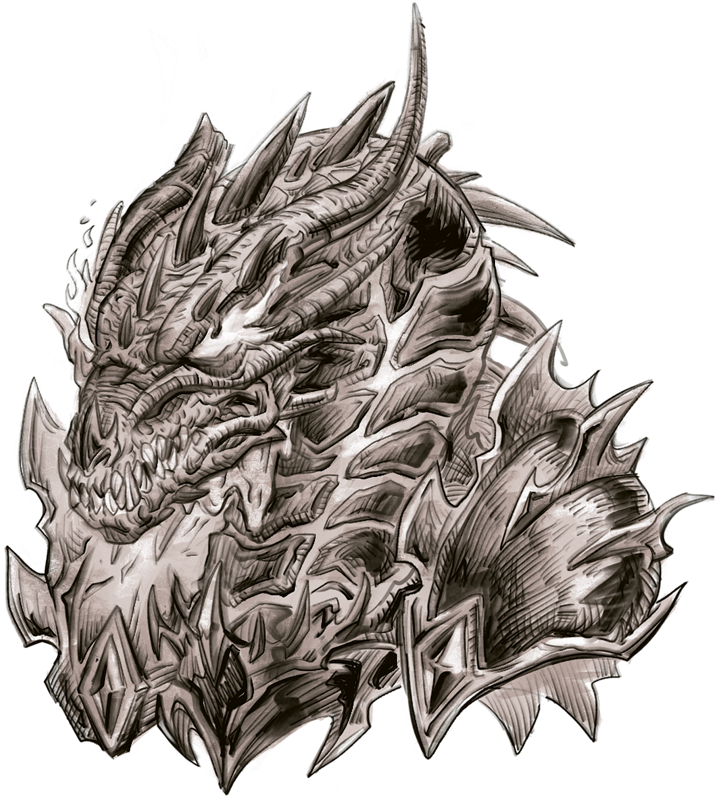
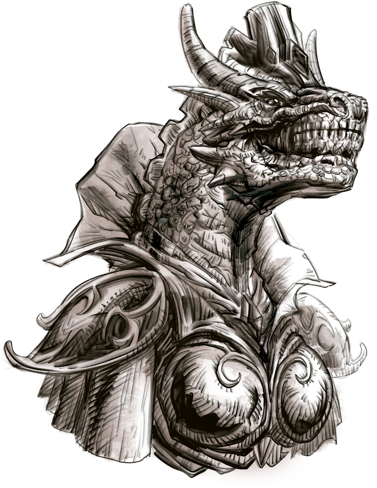

本章章节：巨龙与兵法之道 ・ 战龙起源：五爪之战 ・ 巴哈拉格与兰花战争 ・ 雪崩与裂谷战争 ・ 玛萨戈尔姐弟与铲犁之战 ・ 西萨德诺、伊迪奥马克斯与冻雨世仇之战 ・ 法布伦蒂亚与日光战争 ・ 虹吸战争

世间再没有什么能比沙场征伐的咆哮更令人热血沸腾――至少许多身经百战的老练战龙都是这么告诉我的。我必须承认，“纯粹为了战斗与战争本身而投身其中的巨龙”这一概念曾令我百思不得其解。在我潜心研究龙族万象的头一个世纪里（当然，研究重心自然是永恒之光仪式），我对耳畔偶尔飘过的零星“战龙”传闻向来嗤之以鼻。毕竟，天底下哪条巨龙不具备惊世骇俗的暴力？我们当中的许多同族，难道不正是随着岁月增长而自然化身为暴力的具现吗？所谓的战龙，难道不就只是一条没有选择炼金术或奥术研习等其他志趣，而是将战斗选作毕生热忱的巨龙――本质上就和巨龙蹂躏者没什么两样吗？
在当时过度自信的我看来，这种区分毫无意义；彼时的我根本没有意识到，这个称谓指代的其实是一个鲜为人知的巨龙家族。唉，当年的我年轻气盛、傲慢自负，因此也错得离谱。我最致命的缺陷，便是缺乏那种刨根问底的求知狂热，没能去设想这些古老记载或许正描绘着某种完全超出我既有认知的新事物。
所幸，在随后的数十年间，我彻底磨去了自己身上的这一陋习。我很快便怀着谦卑之心发现，世上确实存在着这样一类巨龙――事实上，那是由五种传承组成的完整家族――对它们而言，交锋、搏杀以及战争的方方面面皆是与生俱来的天命。认识到这一点无疑重塑了我的学术生涯，深深影响了我的治学方法，以及我如今对各类论著进行分门别类与付梓出版的方式。具体到战龙这一课题上，尽管我早已承认了自己昔日的无知，但除却零散的札记外，我却一直未曾将关于它们的研究所得系统地整理成文。那么，就让我在今天弥补这一缺憾，向诸位呈上我的研究成果吧！
在这部手稿中，我将详尽阐述这个天性与战斗及沙场息息相关的五支巨龙传承家族：决斗龙、狩猎龙、佣兵龙、狂怒龙与督军龙。正如你或许已经猜到的那样，这些名字分别代表了这些巨龙在动荡乱世与和平岁月中的热忱与追求；同时，这些名字也昭示着它们各自的天赋伟力，而这些力量又与它们名号所代表的执念相辅相成。当战龙决意深耕自身的武道潜能时，它们终将成长为专注的战场主宰与令人生畏的劲敌。这份天命让它们得以满怀骄傲地将自己的名字镌刻进最受尊崇的战龙史册之中。

在我们深入探究战龙家族之前，请允许我先谈谈巨龙与战争的普遍关系：纵观历史，无论规模大小，无数战争中都有巨龙的身影，亦有无数巨龙被卷入战火之中。战争与巨龙绝非战龙专属的组合。众所周知，任何巨龙都可能出于自愿或被迫卷入一场战争。
对大多数巨龙而言，这一点根本无需赘言。毕竟，我们整个龙族血脉本就诞生于众神与先古者之间的旷世大战――泰坦神战；在那场浩劫中，龙神塔利尔吞噬了那些古老的神兽，并诞下了初代巨龙的龙卵。但那并非一场由我们亲身参战的战争。真正享有这一特殊地位的旷世大战，名为“五爪之战”。
五爪之战对我们的长辈而言是遥远的记忆，对幼龙而言则是耳熟能详的睡前故事。若有读者尚不了解这段至关重要的龙族历史（抑或该称之为神话？），不妨想象一场绵延数代巨龙寿元的漫长战争：战火从存在的各个节点燃起，最终汇作一张吞噬万物的毁灭巨口。鳞甲与双翼的交锋不仅发生在陆地、深水与苍穹，更跨越了元素位面的疆界、生死两界的藩篱，乃至时间长河本身。在这场腥风血雨的风暴中，一整个又一整个巨龙家族诞生、献身，继而陨灭。
这场史诗战争在一千多年前迎来了一个决定命运的转折点――全蚀之战。月亮（正是囚禁着塔利尔的那轮明月）周遭的战线化作了尸山血海，一场惨烈而煎熬的鏖战不眠不休地持续了整整十年。敌对大军不断增援、倒下，又或是被来自异维度的新敌人接替，仿佛永无止境。我的祖龙长辈曾告诉我们，相传在那些岁月里，坠落的龙鳞如流星雨般洒向大地；我们的鲜血将大气染成赤红，滋养着席卷星球的狂风暴雨；每条巨龙体内的魔力都会在陨落之际轰然迸发，化作层层叠叠的极光照亮天穹，随后渐渐消散，融入诸界的本源之中。
全蚀之战爆发数年后，一群无名英雄作出了一项至关重要的发现：在这一切暴力的幕后隐藏着一伙宗教狂热者，正是他们在暗中煽动冲突，企图创造并释放出一个连众神都会受到威胁的渎神存在――将受囚的塔利尔与这位伟大龙神昔日斩杀的神兽不死尸骸强行糅合，让塔利尔重塑为一头初生的灭世憎恶，并借此“脱困”。为了对抗这些恶徒，英雄们踏上了一场壮阔的冒险，奔走于交战各方之间揭露真相；在此期间，狂热者、仍与他们敌对的派系以及旅途中结下的仇敌都在对他们围追堵截。尽管失去了众多盟友，甚至连队伍中的同伴也有人牺牲，但群龙终究团结了足够长的时间，一举击败狂热者，阻止了这场灭世危机化为现实。所有巨龙自此摆脱了永世征战的厄运。
以上便是五爪之战的梗概――至少就我目前的研究成果而言是如此。大多数非龙族的凡人或许从未听说过这段史诗，因为尽管五爪之战规模浩大，它本质上仍是一场龙族内部的战争，对龙族社会与文明之外的生灵和地域仅产生了间接影响。世间或许流传着一些口述传统，提及过某个流星如雨、风暴肆虐、异色极光频现的时代。但除却这些寥寥无几的传说外，我与许多其他学者至今仍未找到任何文献或文物足以算作信史记载。正因如此，学界对于究竟该将这场战争视作龙族历史还是神话仍争论不休。倘若要咬文嚼字一番，我认为我们应当称之为“龙族史前史”。
我猜想，即便是如今在我们之中最年长的太古龙，也只能记起大战结束数百年后的往事。不过，这场战争留下了一个极为显著的产物，那便是一批较新且更为奇特的巨龙品类。在那些并非诞生于泰坦神战的巨龙之中，我认为它们很可能便起源于五爪之战――除了战龙之外，或许还包括异类龙。事实上，我甚至怀疑永恒之光仪式同样源自五爪之战，不过那就是改日再叙的另一个故事了！
如今在完成考证之后，我已得出结论：战龙无疑正是作为五爪之战的产物而崛起的传承之一。根据它们自身的口述传统，战龙家族各支传承的成员最初便是为了充当煽动者或引路人，在各个龙族派系的影响下，将非龙族文明引入（或者按某些人的说法，诱捕、引诱进）五爪之战。这些“盟友”要么沦为炮灰与援军，要么在五爪之战彻底灭绝龙族的极端情况下，成为延续这场冲突的工具。一想到当年竟然有过这种盘算，我就浑身龙鳞倒竖。五爪之战究竟把我们逼到了距离彻底灭绝多近的悬崖边上？
现在，让我们暂且告别神话，来看看信史对巨龙及其参战经历作何记载。无论是围绕凡人还是不朽者、龙族抑或非龙族展开的战争，现存的史料无疑都浩如烟海。同样，这些记载并非仅限于战龙。尽管我并非专职的统计学家，但我依然认为战龙在历次战争中出现的比例高得惊人――尤其是当我们聚焦于类人生物文明之间爆发的战争时。
一条巨龙为何会投身战争，其缘由之丰富，恰似我们为何会追寻某项热忱、构筑某种特定的宝库，或是协助完成某桩使命。不过，仅仅将其归结为“天性”或“选择”未免过于片面；因此，我从自己的笔记中精选了数则著名战例，以展现战龙介入凡间战争的种种面貌。
兰花战争是如今业已解体的克里沙尔人类王国历史上臭名昭著的一场王位继承战争。先女王膝下无嗣，却突遭离奇暴毙，她的王室亲族旋即掀起了一场激烈的内战。然而由于国内人口稀少，各位王位觊觎者都无法在克里沙尔本土募集到像样的军队。不过，他们在兵源上的匮乏，却被依靠当地盛产的稀有合金与宝石积累起的巨额财富绰绰有余地弥补了。

于是，各方势力纷纷从五湖四海重金雇佣了数以千计的外国雇佣兵为自己作战。现金不足以支付的酬劳，争夺王冠的野心家们便以采矿权折抵。随着重赏的消息四散传开，声名显赫的人类刺客“黑衣”巴哈拉格伪装成一名独行游侠剑客踏入克里沙尔，向出价最高的雇主兜售自己的武力。一连数月，巴哈拉格都是一张难以预测的变数牌：他为不同派系履行单独的契约，却从不向任何一方效忠，四处掀起腥风血雨，不断洗牌各方的力量平衡。这场混乱看似永无止境，直到一位势单力薄的王位争夺者联系上巴哈拉格，不仅许以王室国库的一部分财宝，更承诺赐予他及其后裔领地与爵位。
面对如此诱人的价码，巴哈拉格一夜之间便从令人生畏的刺客摇身变为了阴魂不散的情报总管；同样立竿见影的是，敌对派系人员的失踪数量开始急剧飙升。最终，伤亡人数实在太过惨重，与巴哈拉格为敌的各派系不得不达成临时休战，联手追查这波骤增凶案的幕后黑手。这个临时结成的联盟共同举行了一场强大的魔法仪式，试图探明敌人的真实底细，并寻找克制其不断膨胀的力量之法。
借由占卜，他们不仅查明了巴哈拉格的身份，更骇然发现死于他连番杀戮之下的受害者并未真正安息――相反，巴哈拉格将所有被杀者的灵魂尽数囚禁了起来，甚至连最初雇佣他的那支失势王族的灵魂也未能幸免。随着真相败露、联合围剿步步紧逼，巴哈拉格潜入了暗处深深蛰伏，静待风头过去后再重操致命旧业。
然而，有了这一惊人发现后，化敌为友的幸存反抗者们怀疑这名雇佣兵绝非表面看起来那么简单。经过数月缜密的调查与魔法追索，他们终于查明巴哈拉格根本不是寻常的雇佣剑客，而是一名化作人形的巨龙变形者，并将其真面目公之于众――那是一头无休止地渴求收割尽可能多灵魂的邪恶巨龙。随着真身彻底败露，巴哈拉格将克里沙尔变成私人王室灵魂牧场的阴谋也宣告破产。或许最出人意料的结局在于，由于各派系齐心协力铲除巴哈拉格，和平谈判也随之开启，残存的王室家族之间最终达成了停战协议。
故事讲到这里便变得扑朔迷离起来，因为没有人确切知晓接下来究竟发生了什么。有些版本称，在最后的和平谈判期间，未来的君主设法找到了一个契约漏洞，解除了与巴哈拉格缔结的神圣契约；但这一漏洞却导致所有受困灵魂瞬间释放，反倒将巴哈拉格的力量推升至前所未闻的境界。凭借这股新获的伟力，巴哈拉格在王都内大肆肆虐，摧毁了王室城堡，并将王室血脉屠戮殆尽。
另一些说法则称，和平谈判不过是王室设下的幌子，旨在引诱妄图借王族齐聚一堂之机大举暗杀的巴哈拉格自投罗网；结果反倒是王室成功触发陷阱生擒了巴哈拉格，逼迫他释放出所有受困的灵魂，随后将其彻底处死。
更有传言说，巴哈拉格至今仍然活着，正腐烂于王室地牢的最深处，日夜幻想着复仇，只待时机成熟便向所有亏待过他的人痛下杀手。无论真相如何，巴哈拉格的最终命运至今仍是一桩悬案。
根据我搜集到的各方记述，我认为大可以稳妥地断定：巴哈拉格是一条顺应自身传承本性、贪婪觊觎灵魂的传统派佣兵龙――而在他的案例里，他尤为钟情王室的灵魂。他竟险些将整场战争彻底扭曲成满足一己私欲的工具，这实在令我生出一丝病态的赞叹。我曾一度动过前往克里沙尔实地探访的念头，想看看他是否还活在某个角落，但同行们纷纷劝阻了我。确实，倘若他还活着，如今必定已是一头太古龙；而正如我曾吃尽苦头才学到的教训那样，太古龙对于旁人跑去采访它们昔日败绩的行为，向来没什么好脾气。
裂谷战争是两个多种族混居的国家围绕辽阔的璀璨山脉展开的一场旷日持久的领土争端，前后绵延逾百年之久。更具体地说，两国争夺的是贯穿群山的商道控制权――其中既包括先古文明开辟、两国期盼有朝一日得以修复的古老商路，也包括日后有望开辟为成熟商道的未开发疆域。

在裂谷战争期间，寒冬向来是最为难熬的时节。交战双方的士兵大多龟缩在前哨堡垒中，鲜少尝试夺取或收复失地。冬季里他们最常见的勤务，便是侦察己方控制区，并在山体滑坡或雪崩堵塞道路时清理通道。每年双方都会在这些任务中折损一些兵力，但两国政府都将此类伤亡视作可接受的正常损耗。
到了战争的第五十个年头左右，局势陡生变故：冬季勤务中失踪折损的士兵人数几乎翻了三倍，且大多归咎于雪崩。而在第八十个年头，事态出现了更为蹊跷的转折――冬季的伤亡突然一面倒地集中在了其中一个国家身上，另一国却几乎毫发无损。当裂谷战争步入第九十五年时，胜负天平终于彻底明朗。
次年春天，和平条约的谈判正式启动，却一拖便是数年。冗长的谈判非但没能化解争端，反而令紧张局势愈演愈烈。就在战火眼看又要重燃之际，那头后世史书称之为“雪崩”的远古狩猎龙悍然现身，在会谈期间对各国代表展开了猎杀。少数在“雪崩”首轮袭击中幸存的代表及其护卫被困在了一座古老的前哨废墟之中。最终，交战双方齐心协力，在为时已晚之前成功格杀恶龙、救出了外交使团。经此一役，双方旋即火速达成共识并签署了和约。
时至今日，战败国对璀璨山脉早已避之唯恐不及；而战胜国似乎也接受了在财政、军事与声誉上付出的沉重代价，以此换取对群山的主权。然而，在商道上巡逻的士兵至今仍在离奇失踪，在寒冬腊月里尤为频繁。
若要举出一个“巨龙出于一己私欲作为第三方行事，却在客观上'促成'某一方赢得战争”的典型战例，没有比裂谷战争更贴切的了。不过，这桩故事仍留有空白：“雪崩”究竟是有意介入战局的主动参与者，还是仅仅是个恰逢其会的失控变数？显而易见，在战争第八十年左右的某个节点，必定发生了某种变故。据我访谈过的几条巨龙所言，“雪崩”在那个时期因诅咒或恶疾而出现了心智衰退。考虑到尽管它已然毙命（我亲眼查验过那具骸骨，可以作保――绝非赝品！），失踪事件却延续至今……显然，山里还有另一位猎手仍在游荡……
在世界各地，半身人之间爆发的战争都极为罕见。尽管铲犁之战在半身人的战史中并不算特别有名，但就我目前所知，这是唯一一场有巨龙明确介入其中的半身人战争。这场战争的起因颇为不幸：在熬过一个异常严酷的荒年之后，以半身人为主体的弹丸小国约德在多处乡村地区爆发了严重的饥荒。由于调度不力与严重的贪腐，一部分土地所有者设法攫取了超额赈济，另一些乡民却粒米无着、求助无门。这最终引爆了一场农夫起义，并迅速演变为旨在推翻国家议会、建立新政府的政变。

这场革命之所以声势浩大，部分原因在于起义军得到了年轻的永光决斗龙萨瓦图莉什的鼎力支持。萨瓦图莉什在战前约二十年迁居约德，很快便在这个半身人国度中站稳脚跟、如鱼得水。这条巨龙天性嫉恶如仇、言辞激昂，既是技艺精湛的决斗家与战场军师，又是坚定的反贪斗士。这一切都让萨瓦图莉什顺理成章地成为了农夫们的精神领袖；其中一个派系甚至将她标志性的刺剑奉为徽记。
史学家普遍认为，萨瓦图莉什的介入避免了大量流血伤亡――因为她常常向敌军提出以决斗代替两军全面交锋的选项，既可以与她一对一单挑，也可以派出数名勇士组成小队应战。甚至有史学家指出，若非萨瓦图莉什参战，农夫起义恐怕早已被镇压下去。我个人颇为赞同这一假说，而且有一项强有力的证据足以佐证：在她公开参战数月之后，约德议会决定如法炮制，雇佣一条属于自己的巨龙前来助阵。毕竟，要对付一条巨龙，还有什么对策比请来另一条巨龙更好呢？
通过某种至今仍未查明的渠道，约德政府聘请到了传统派决斗龙布拉什蒙多前往助战。没过多久，两条巨龙便在约德首都狭路相逢；令所有人跌破眼镜的是，这两条决斗龙竟然是一对已经将近一个世纪没说过话的亲姐弟。有人推测，这正是官方档案中完全查不到政府究竟向布拉什蒙多许诺了何种报酬的原因――他八成是不请自来，纯粹是为了击败自己的姐姐。

果不其然，萨瓦图莉什发起了决斗邀约，布拉什蒙多欣然应战。无论哪条巨龙获胜，都能赢走对方的武器，外加至少一个世纪压过手足一头的吹嘘资本。这场对决在首都的大广场上举行，周边地区几乎倾城而出，只为一睹盛况。据传，姐弟二人精彩绝伦地激斗了一个小时，直到萨瓦图莉什的一名盟友打破了决斗礼仪――在萨瓦图莉什被击落兵刃后，此人贸然踏入广场将武器递还给了她。约德乡间的民间传说坚称这一举动并不违例，或许是不愿让自家同伴为随后的惨剧背负骂名；因为布拉什蒙多当即挥爪见血，伤了这位擅自闯入的姐姐盟友。这一切都发生在电光石火之间，而在围观人群眼中，“对面那帮人”刚刚越过了底线――要么是卑鄙地干预决斗，要么是残忍地袭击非战斗人员。
刹那间，一场大规模混战与骚乱轰然爆发，很快席卷了首都内几乎每一个人。至于那对巨龙姐弟呢？人们最后见到他们时，两人正一路打上高天，仿佛地面上什么都没发生过一般继续着他们的决斗，此后谁也没有再回过约德。不过在一二十年后，玛萨戈尔龙族世家倒是特意派人给这个国度捎去口信，向半身人们保证姐弟俩都活得好好的，依然在天涯海角的某处打得不可开交。
老实说，当我从玛萨戈尔家族的闲谈八卦中得知这对姐弟的宿怨竟真如传闻中那般确有其事、又荒唐透顶时，着实大吃了一惊。照他们亲戚的说法，萨瓦图莉什与布拉什蒙多打从雏鸟般尚在巢中时便开始扭打，自那以后就再也没停过手。万幸的是，迄今为止只有这一场战争被卷进了他们的拌嘴斗气之中。但他们的后代与门徒可就另当别论了――这帮小辈继承了二人的争强好胜，甚至不惜在好几场战争中特意投效敌对双方，只为了一较高下，替自己的恩师或血亲赢下一场胜利。
冻雨世仇是数支牛头人氏族之间延续至今的一场冲突，始于一千多年前，战场局限于冰封大洋中央的一座休眠火山岛上。在火山尚未休眠、牛头人也尚未抵达之前，岛上仅有的居民是两条争斗不休、口角不断的狂怒龙――伊迪奥马克斯与西萨德诺。双方都坚称这座岛屿归自己所有，谁也不愿与对方共享地盘――至于究竟哪条龙先登上岛屿，双方的说法自然不出所料地各执一词。
等到牛头人抵达之时，两条巨龙早已是积怨已久的死对头。这些牛头人原本同属一个氏族，只因在常规迁徙途中遭遇恶劣天气受阻，最终被困在了岛上。起初，氏族表决决定休整一番后再继续启程；然而，两条狂怒龙慷慨热情的款待却诱使大多数族人留了下来。据说最终只有寥寥数名牛头人继续踏上了迁徙之路，而留下的族人要么在伊迪奥马克斯的巢穴旁定居，要么在西萨德诺洞窟入口处聚落成村。

随着岁月推移，氏族内部渐渐生出嫌隙，围绕两条巨龙建立的两处聚落也愈发水火不容。双方的敌意深重到如此地步：当西萨德诺将伊迪奥马克斯重创至无法飞行的境地时，居住在伊迪奥马克斯附近的牛头人当即向西萨德诺洞窟聚落的同族发动了袭击。尽管这次突袭原本旨在洗劫西萨德诺的宝库，却在事实上演变成了两大牛头人派系之间的宣战。
很快，两条巨龙也纷纷出面庇护各自麾下的氏族，甚至在交战中亲率部众发起冲锋。有一次，西萨德诺在伊迪奥马克斯的盟友撤退途中设伏突袭――至于此举究竟是先发制人，还是为了报复近期的一场败仗，史学家们至今仍众说纷纭。然而这一战却招致了西萨德诺的覆灭：短短数小时后，伊迪奥马克斯反过来以彼之道还施彼身，一举斩杀了较为年轻的西萨德诺。
曾与西萨德诺结盟的牛头人就此流散。大多数幸存者决定完成数百年前未竟的迁徙，离开岛屿去寻找当年的远行族人。最终，逃亡的牛头人成功与失散已久的同源氏族重逢，并将他们尽数招揽进了为西萨德诺复仇的大业之中。这些牛头人整整花了三百年才找到击败伊迪奥马克斯的方法；然而那头巨龙的巢穴虽遭重重围困，却至今未被攻破。据我最近听到的消息，牛头人之间的厮杀仍在继续：一支氏族固守在龙巢之内，其余氏族则在巢穴之外连年征战。
一场龙族之间的争端演变为凡人之间的战争，甚至在两条当事巨龙双双殒命之后仍绵延至今，这着实是桩罕见的奇事。在所有战龙当中，关于狂怒龙主动寻觅战争的记载是我找到最少的一类。十有八九，它们都是被自己的暴脾气或其他强烈情绪拖入战火之中的。而一旦某条狂怒龙卷入战争，无论它是出于主动且有意识的参战，还是仅仅源于纯粹的因果连锁，往往都会令这场战争久拖不决。

当一众法师机缘巧合之下获得一枚龙卵时，历史的轨迹悄然发生了转折。这些法师被打上异端烙印，在一座属于反抗军贵族支持者的偏远堡垒中隐匿了数年之久。在他们的悉心照料下，法布伦蒂亚于十年后破壳而出，成为了一条孤身降生在类人生物社会中的雏龙。她的降生被诸多宗教派系视作天降征兆：将她奉为胜利先兆的派系纷纷转而支持反抗军的世俗大业；另一些派系则唯恐她预示着己方的败亡，反倒加紧了对反抗军的镇压――为了煽动民众反对起义军，他们甚至在毫无凭据的情况下捏造谣言，诬称反抗军是崇拜龙神塔利尔的邪教徒，妄图将塔利尔从月之囚笼中释放出来。
年幼的法布伦蒂亚被刻意隔绝在这些早期风波之外，好让她能专心致志地投入学业，成长为反抗军大业最完美的军人――更确切地说，一名全军主将。从现有史料中很难分辨，这条巨龙究竟是天性便热衷于研习兵法，还是在养父母辈的刻意栽培下才走上了这条道路。尽管身为巨龙，法布伦蒂亚却和其他普通士兵一样按部就班地从基层历练晋升：她最初在一名执掌军需后勤的骑士麾下担任侍从，随后一步步加入步兵、转入骑兵，最终跻身统帅之列。
这位督军龙顺理成章地声名鹊起，尤其是在著名的“日光天降”之役过后――当时法布伦蒂亚诱使敌军骑兵向自己发起冲锋，随即骤然收拢双翼急速俯冲，让高悬天际的烈日瞬间暴露无遗；刺目的强光令敌军陷入短暂目盲，恰好为己方部队抢占上风争取到了宝贵战机。尽管曾一次又一次负伤挂彩，法布伦蒂亚还是活了下来，送走了身边无数的导师与战友。她吃过的败仗或许与其他才华横溢的将领一样多，但这条巨龙似乎注定要赢得整场战争。
她的功勋是如此传奇，常胜不败的神话又是如此深入人心，以至于这位督军龙最终成功说服交战各方坐上了和平谈判桌。和平条约签署之时，她才刚刚步入完全成年期。和平曙光降临之后，法布伦蒂亚便踏上了一段探寻自我的旅途；此后的两千年间，世上再也没有人听闻过她的音讯。
在我的研究历程中所接触到的所有战龙里，法布伦蒂亚因其独树一帜的视角而显得格外突出。由于自幼在非龙族的同侪之中长大，她得以站在并肩作战的凡人战友的角度审视战争，全无寻常巨龙惯有的成见与自矜。我对传闻中那个国度用来催发她破壳孵化的仪式颇感好奇――就我发掘出的关于那场数千年前古老仪式的零星直接证据来看，其中竟有好几处术式残片与永恒之光仪式如出一辙……
倘若有一场涉及巨龙的近代战争是我们不得不谈的，那必定是数个世纪前反抗征服者“虹吸法师”、为捍卫魔法自由而打响的那场大战（寿命短暂的种族们，请别在这里对我使用“近代”一词吹毛求疵――哪怕是人类自己，也会把横跨数个世纪的岁月划归近代）。这场战争有着许多截然不同的名称：沿海与群岛的居民通常称之为“风海战争”；在大陆腹地，我则听人称之为“奥术战争”、“巫术清洗”、“地脉解放之战”等五花八门的名号；而在我们巨龙之中，大家最铭记于心的称呼则是“霸主战争”――因为这场冲突造就了历史上屈指可数的几次升级为全面战争的巨龙霸主争霸赛。
关于虹吸法师究竟是何方神圣、本质为何，各地史书的记载彼此矛盾。毫无疑问，虹吸法师的铁蹄征服导致了大量文献的散佚。目前学界的共识是：他们皆是以类人形态在公众面前现身的施法者，最初仅有五人，到战争末期则扩充至十二人。他们怀揣着唯一的目标：将世间一切魔法尽数纳入掌控，继而凭此伟力统治世界；至于达成这一目标的手段与途径，他们全然不择手段。龙族介入虹吸战争是一个循序渐进的过程。那一时期，整个龙族正全神贯注于巨龙霸主争霸赛，许多同族并未将虹吸法师视作值得一提的威胁。因此，当霸主候选者之一的迪奥珊西拉克斯开始款待虹吸法师的使节，并派遣麾下巨龙协助虹吸法师参与大小战事时，他的竞争对手们对此不以为意，反而嘲笑迪奥珊西拉克斯竟如此轻易分心。
在随后的龙牙争霸赛上，这种嘲笑被证明是个天大的错误：迪奥珊西拉克斯在对决中当场窃取了远古狂怒龙主母桑多克丝莉的体内魔力，轻而易举地将她制服。面对魔力被剥夺的可怖威胁，桑多克丝莉的家族以及众多其他巨龙很快便屈膝投降。作为魔法造物，失去魔力对巨龙而言比死亡还要凄惨。
在此后的数月间，迪奥珊西拉克斯一跃成为整场虹吸战争中的关键人物与心腹大患。部分记载暗示他本人或许正是“第十虹吸法师”；不过由于这一细节主要见于民间传说而非信史档案，其真实性仍有待商榷。随着虹吸法师与迪奥珊西拉克斯征服的疆域日益扩大，余下的巨龙霸主角逐者们终于清醒地认识到：迪奥珊西拉克斯是否还按传统继续参加争霸赛早已无关紧要。只要他赢下虹吸战争，他对整个龙族的暴政统治就将是绝对的――这与传统的巨龙霸主截然不同，后者原本只是一项代表尊崇的荣誉头衔，而非执掌生杀大权的君王主权。
正是在这一危急关头，督军龙内拉希芙尼斯向家族请命，倡议加入反抗虹吸法师的联军。家族采纳了这一提议，分作数批奔赴各方，投身于不同的抵抗势力之中；而内拉希芙尼斯则肩负起了为大业招募更多巨龙的使命，重点游说那些仍在角逐霸主之位的强者。许多巨龙欣然响应，尤其是那些自雏龙时期便与内拉希芙尼斯交好的挚友；另一些则费了一番口舌才得以说服。不出十年，上千条巨龙便已奔赴前线，投身于反抗虹吸法师的战争之中。
尽管整场战争直到身居首位、也是最后一名幸存的“第一虹吸法师”毙命数十年后才算真正平息，但从龙族的视角来看，意义最为重大的决战无疑是风暴之门战役。当时联军由十二个同盟国、六十支松散团体与组织，以及整整一千条巨龙组成；他们所面对的，则是第三虹吸法师与第十虹吸法师麾下合流的可怖大军――敌军兵力高达五万之众，其中还包含五百条受奴役的巨龙。
战局起初对解放联军颇为有利，直到迪奥珊西拉克斯率领一支两千人的飞行骑兵突入战场――其中不乏驾驭着受奴役巨龙的龙骑士。高空中的激战顿时白热化，战场态势开始逆转。就在联军即将正式下达撤退命令的前几分钟，内拉希芙尼斯与数位巨龙霸主角逐者及几名精锐盟友成功将第三虹吸法师从她的巨龙坐骑上掀落；当联军施法者以法术反制破除了她用来缓冲坠势的魔法后，这名令人闻风丧胆的惑控妖妇当场坠地身亡。暴怒的迪奥珊西拉克斯疯狂寻仇，硬生生将这支突击小队拽落地面，展开了一场九死一生的殊死搏杀。
就在迪奥珊西拉克斯即将把整支小队屠戮殆尽的千钧一发之际，此前被迫充当第三虹吸法师坐骑的桑多克丝莉因累累伤痕激发了体内狂怒，短暂地挣脱控制恢复了神智。这位前任霸主角逐者一口狠厉咬向迪奥珊西拉克斯，引开了他的注意。这为内拉希芙尼斯的突击小队争取到了无比宝贵的喘息之机，众人齐齐向这头巨龙暴君刺出致命重创，终于终结了迪奥珊西拉克斯的恐怖统治。
然而，纵观全局，距离整场战争落幕仍有漫长岁月。不过对龙族而言，这一届巨龙霸主争霸赛已近乎尘埃落定――因为在与迪奥珊西拉克斯的死斗中，仅有两位角逐者幸存下来。但这两位幸存者援引了一条古老而冷门的旧规，共同推举内拉希芙尼斯为新任巨龙霸主，哪怕这位年轻的督军龙甚至连初选都未曾报名。尽管猝不及防，内拉希芙尼斯还是出色地担起了这一重任，证明了自己实至名归。虽然在下一次争霸赛中，内拉希芙尼斯败给了一条年长得多、也强大得多的巨龙，但数个世纪之后，凭借崇高声望缔结的同盟，内拉希芙尼斯又险胜夺魁，再度登顶。如今内拉希芙尼斯依然健在，在龙族社会中的未来想必一片光明。
到目前为止，我所举的战例皆属历史往事；但我也收集到了一些近几十年来战龙介入战事的传闻，更有线索表明它们或许很快又要卷入一场新的战争。唉，我并非专攻战史的学者，还必须推进下一阶段的龙族研究课题。因此，亲爱的读者们，若你们对此心怀好奇，我便将自己掌握的线索留给诸位自行追踪探究了。倘若你们查到了任何后续进展，请务必来信告知，我定会在本手稿的下一版中将其收录其中（当然，绝不会忘了为诸位署上应有的功劳！）。